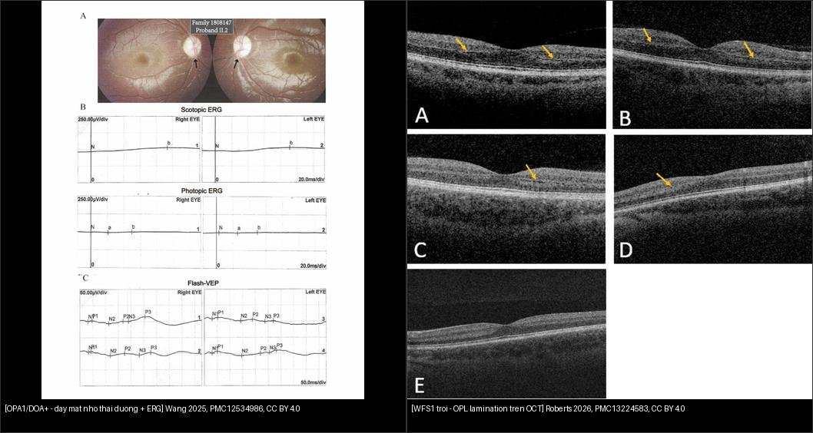
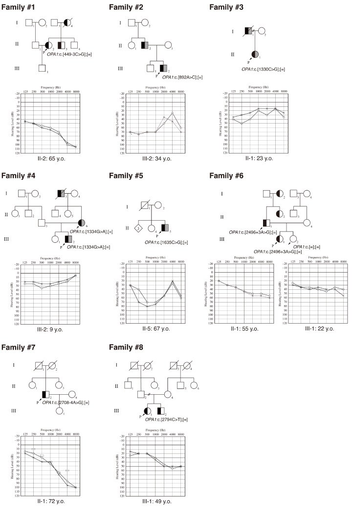
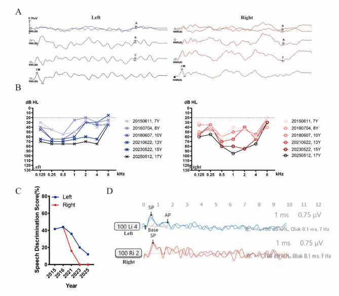
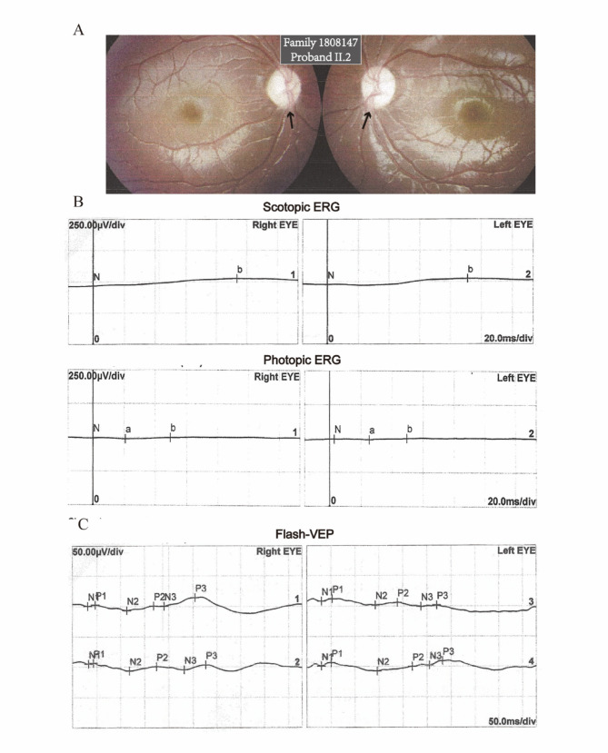
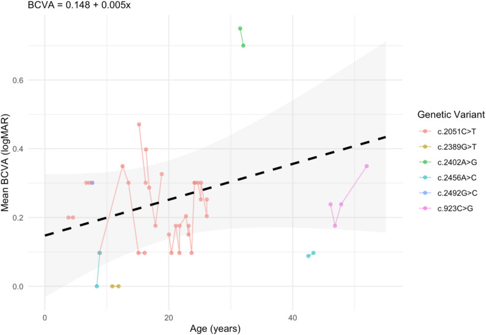

437 — Teo thị kèm ĐIẾC: DOA+/OPA1 & WFS1 trội (Wolfram-like) / Optic atrophy with hearing loss (DOA-plus & autosomal dominant WFS1)
Tags: pattern:teo-thi pattern:diec-thi-giac pattern:benh-ty-the vung:than-kinh-thi vung:vong-mac anatomy:co-dinh-thinh protocol:OCT-RNFL-GCL protocol:audiometry-ABR protocol:MRI-hoc-mat score:logMAR
Mức chắc chắn (certainty): tổng hợp y văn (literature synthesis) — nhóm tự biên từ y văn mở: Kawakita M Genes 2026 (CC BY 4.0, PMC13025685), Wang H Orphanet J Rare Dis 2025 (CC BY 4.0, PMC12534986), Roberts JP Orphanet J Rare Dis 2026 (CC BY 4.0, PMC13224583), Otsuka S Genes 2025 (CC BY 4.0, PMC11764508), Serbis A Int J Mol Sci 2023 (CC BY 4.0, PMC9960967) và các tổng quan nhiễm sắc thể/ty thể CC BY khác.
Vì sao bài này quan trọng: bài 434 (bệnh TK thị do độc–chuyển hóa & LHON) và 439 (teo thị di truyền DOA/OPA1 & Wolfram) đã nhắc DOA+ và Wolfram-like nhưng chỉ như một hàng trong bảng. Nhóm "teo thị + điếc" đứng giữa nhãn khoa – tai – nội tiết – thần kinh: bệnh nhân thường đến tai trước vì điếc xuất hiện TRƯỚC teo thị (WFS1: điếc trung vị 2 tuổi vs teo thị 10 tuổi) và mắt bị bỏ qua. Với WFS1, bỏ sót nghĩa là không tầm soát đái tháo đường/đái tháo nhạt/đường tiết niệu — những cái quyết định tiên lượng (thể lặn chết trung vị 30–40 tuổi). Với OPA1, hỏi điếc + tiền sử gia đình giúp phân biệt teo thị di truyền với "độc chất" (ethambutol, B12) và "glaucoma" — tránh điều trị sai hướng.
1. Tổng quan — vì sao sợi trục TK thị và tế bào lông ốc tai "chết ngược" cùng lúc
- Hai nhóm nguyên nhân chính của "teo thị + điếc" di truyền:
- OPA1 (gen nhân, protein màng trong ty thể — GTPase dung hợp ty thể; autosomal dominant optic atrophy, ADOA — teo thị di truyền phổ biến nhất). Khi tổn thương lan ngoài mắt (điếc tiếp âm, myopathy, bệnh thần kinh ngoại vi, ataxia, sụp mi, CPEO) → DOA-plus; ~10–20% người mang đột biến OPA1 có biểu hiện DOA-plus.
- WFS1 (protein lưới nội chất (ER) điều hòa calci): thể lặn = Wolfram syndrome 1 (WS1, DIDMOAD) — ĐTĐ + đái tháo nhạt + teo thị + điếc, tiên lượng nặng; thể trội = "di truyền trội WFS1" (Wolfram-like) — điếc tiếp âm sớm + teo thị muộn hơn, thường nhẹ hơn (trừ Hattersley–Urano).
- Cơ chế hình ảnh (TẠI SAO):
- Sợi trục thần kinh thị không có bao myelin ở đoạn trước màng cứng và phụ thuộc hoàn toàn vào ty thể để dẫn truyền; tế bào lông ốc tai là một trong những tế bào "ngốn" năng lượng nhất cơ thể. Khi dung hợp ty thể (OPA1) hoặc cân bằng calci ER (WFS1) hỏng → chết tế bào hạch võng mạc (retinal ganglion cell, RGC) kiểu "chết ngược từ sợi trục" (dying-back) → mỏng dần lớp sợi thần kinh (RNFL) và lớp tế bào hạch (GCL).
- Trên đáy mắt: đĩa thị nhợt màu THÁI DƯƠNG (temporal pallor) do mất các bó nhú–hoàng điểm; không phù, không xuất huyết, không viêm — "teo" chứ không phải "phù/sung huyết".
- Vì sao OCT là chốt sớm: RNFL/GCL mỏng TRƯỚC khi thị lực giảm rõ; RNFL thái dương mỏng + GCL mỏng dần theo thời gian = "dấu vân tay" của teo thị di truyền.
- WFS1 trội đặc trưng trên OCT: "OPL lamination" — dải lớp rối ngoài (outer plexiform layer, OPL) được phân lớp rõ rệt; gặp ở 6/8 ca quét OCT — dấu đặc trưng hơn là chỉ "RNFL mỏng" chung chung.
- MRI hốc mắt/sọ: dây thần kinh thị mỏng, tín hiệu T2 có thể tăng; MRI não ở ADOA cho thấy giảm thể tích chất xám liên quan thị giác; MRI không có khối, không ngấm — giúp loại trừ chèn ép/u.
- Ngưỡng định lượng nằm lòng:
- OPA1 ở nhóm ĐIẾC: 8/18.475 proband (0,043%) có biến thể OPA1 (Kawakita 2026); điếc tiếp âm (post-lingual), tiến triển, nhẹ–trung bình; biến thể missense gắn với DOA-plus + ANSD. → "teo thị" có thể ẩn trong cohort điếc.
- OPA1 ở nhóm điếc tiếp âm (auditory neuropathy, AN): 7/452 = 1,55% (Wang 2025); 85,71% (6/7) là missense vùng GTPase; 4/7 điếc nặng–sâu; AN khởi phát trước tuổi 20, tốc độ mất thính lực 2,74 dB/năm ở tần số tiếng nói.
- WFS1 trội (Roberts 2026, n = 15): tuổi chẩn đoán điếc trung vị 2,0 tuổi vs teo thị trung vị 10 tuổi; 15/15 dùng máy trợ thính, 8/15 cấy ốc tai hai bên; thị lực và RNFL ỔN ĐỊNH theo thời gian (VA 0,052 logMAR/năm, p = 0,159; RNFL 0,038 µm/năm, p = 0,829); OPL lamination 6/8 ca.
- WFS1 p.A684V (điểm nóng): 14 bệnh nhân/13 gia đình (Otsuka 2025), 9 ca lẻ tẻ, de novo ở 7 gia đình, điếc nặng–sâu sớm, cấy ốc tai cho kết quả tốt.
- WS1 thể lặn (Serbis 2023): điếc xuất hiện trung bình 12,5 tuổi (5–39), 62% bệnh nhân; ĐTĐ non typ 1; bất thường tiết niệu 19–90%, khởi phát ~20 tuổi; tuổi chết trung vị 30–40 tuổi.
2. Mẫu hình + chẩn đoán phân biệt theo cơ quan kèm (gamut)
Câu hỏi lọc: "Teo thị hai bên + ĐIẾC — phân biệt bằng cơ quan nào kèm theo và tuổi khởi phát?" → điếc sớm hơn nhiều so với teo thị (WFS1 trội) là chìa khóa định hướng gen.
Gamut theo tổ hợp cơ quan:
- Teo thị + điếc, KHÔNG ĐTĐ, không di truyền lẻ tẻ: OPA1/DOA+ (AD) — điếc ANSD + myopathy/neuropathy/ataxia/ptosis/CPEO; đĩa thị nhợt thái dương, ERG giảm.
- Teo thị + điếc, điếc TRƯỚC, đôi khi ĐTĐ/cataract sớm: WFS1 trội (Wolfram-like) — OPL lamination trên OCT, thị lực ổn định.
- Teo thị + ĐTĐ + đái tháo nhạt + tiết niệu/thần kinh: WS1 thể lặn (DIDMOAD) — nặng hơn, tiến triển.
- Mất thị lực CẤP ở người trẻ, không điếc: LHON (434) — 3 đột biến ty thể 11778/14484/3460.
- Teo thị + bệnh TK/tai–thân khác: MELAS/MIDD, POLG, PHARC, CMTX5 (PRPS1), hội chứng ty thể phức hợp.
- Teo thị hai bên MẮC PHẢI (không di truyền): độc chất (ethambutol, B12, rượu–thuốc lá, 434), chèn ép/u/viêm (430), glaucoma tiến triển (442) — luôn loại trừ trước khi gọi "di truyền".
3. Bảng so sánh phân biệt (ma trận đối chiếu)
| Thực thể (entity) | Hình ảnh điển hình (đáy mắt / OCT / ERG / MRI) | Chốt vào (rule-in) | Chốt loại (rule-out) | Gợi ý xác nhận |
|---|---|---|---|---|
| OPA1 — DOA+ (trội) | Đĩa thị nhợt thái dương hai bên; RNFL/GCL thái dương mỏng; ERG/VEP giảm; MRI dây thị mỏng | Teo thị hai bên + điếc tiếp âm (ANSD) + tiền sử gia đình AD + myopathy/neuropathy/ataxia | Điếc TRƯỚC teo thị rất lâu + ĐTĐ/đái tháo nhạt → nghĩ WFS1 | NGS panel OPA1; OCT RNFL/GCL theo dõi; ERG |
| WFS1 trội (Wolfram-like) | OPL lamination trên OCT (6/8 ca); đĩa thị nhợt; thị lực & RNFL ỔN ĐỊNH | Điếc tần số thấp sớm (trung vị 2 tuổi) + teo thị muộn hơn (10 tuổi) + ĐTĐ/cataract sớm | Thể lặn đầy đủ DIDMOAD + tiết niệu/thần kinh nặng → WS1 | NGS WFS1; tầm soát đường huyết/thính lực; OCT OPL |
| WS1 thể lặn (DIDMOAD) | Teo thị + bất thường não/thần kinh; OCT RNFL/GCL mỏng; MRI não teo | ĐTĐ typ 1 không tự miễn + đái tháo nhạt + teo thị + điếc + bất thường tiết niệu | Teo thị/điếc đơn độc, ĐTĐ tự miễn → không phải WS1 | Glucose, osmolality nước tiểu, siêu âm thận; NGS WFS1 |
| LHON | Mất thị lực cấp không đau một mắt rồi hai mắt; đĩa thị phù nhẹ rồi teo | Nam trẻ, giảm thị lực cấp, không điếc, mẹ/bên mẹ có người bệnh | Tiến triển âm thầm nhiều năm + điếc → OPA1/WFS1 | Đột biến ty thể 11778/14484/3460 |
| Teo thị do độc chất (ethambutol/B12) | Đĩa thị nhợt hai bên; RNFL mũi–thái dương mỏng | Tiền sử dùng ethambutol > 15 mg/kg/ngày, rượu–thuốc lá, thiếu B12 | Điếc tiếp âm + tiền sử gia đình AD → nghĩ di truyền | Ngừng thuốc + theo dõi; B12; xem xét gen nếu không đáp ứng |
| Glaucoma (tiến triển) | Lõm/xoang thần kinh thị (cupping), RNFL mỏng theo nan hoa | IOP cao + lõm đĩa + khiếm khuyết thị trường đặc trưng | Đĩa thị nhợt phẳng KHÔNG lõm + điếc → teo thị di truyền | OCT RNFL + thị trường + IOP (442) |
| Chèn ép/u thần kinh thị (430) | Dây thị to/ngấm thuốc, khối hốc mắt/sọ | Đĩa phù nặng một bên + mất thị lực nhanh + khối trên MRI | Hai bên, nhợt phẳng, tiến triển chậm → di truyền | MRI hốc mắt + sọ có/không cản quang |

Trái: OPA1/DOA+ — (A) đáy mắt hai mắt nhợt đĩa thị thái dương (mũi tên), (B) ERG scotopic/photopic giảm biên độ, (C) VEP nháy (Wang H et al., Orphanet J Rare Dis 2025, PMC12534986 Fig. 3, CC BY 4.0). Phải: WFS1 trội (Wolfram-like) — OPL lamination trên OCT (mũi tên vàng): dải lớp rối ngoài phân lớp rõ, dấu đặc trưng gặp ở 6/8 ca (Roberts JP et al., Orphanet J Rare Dis 2026, PMC13224583 Fig. 4, CC BY 4.0). Chốt: hỏi điếc xuất hiện trước hay sau teo thị + hỏi ĐTĐ/đái tháo nhạt + OPL lamination. Ảnh ghép letterbox.Ba câu hỏi định hướng gen (ghi vào phiếu khám)
- Điếc hay teo thị xuất hiện TRƯỚC? — điếc sớm (tuổi mẫu giáo) → WFS1 trội; teo thị thập niên đầu, điếc muộn hơn → OPA1.
- Có ĐTĐ/đái tháo nhạt/bất thường tiết niệu? — có → WFS1 (thể lặn = DIDMOAD, thể trội = Wolfram-like).
- ERG/OCT: ERG giảm biên độ + RNFL thái dương mỏng (OPA1) vs OPL lamination (WFS1 trội).
4. Protocol chụp–xét nghiệm + tầm soát hệ thống + sơ đồ
Nhãn khoa (theo dõi định lượng):
- OCT RNFL + GCL (bắt buộc): đo µm từng phần tư; RNFL thái dương mỏng là dấu sớm; theo dõi tốc độ mỏng (RNFL ~0,04 µm/năm ở WFS1 trội = gần như ổn định).
- Thị trường Humphrey 30–2/24–2: khiếm khuyết trung tâm/trung tâm-cạnh (cecocentral); không theo kiểu mất nửa thị trường của glaucoma.
- Đáy mắt màu + ảnh đĩa thị: nhợt thái dương, đĩa phẳng không lõm.
- ERG/VEP khi cần phân biệt tổn thương RGC vs tế bào cảm quang.
- MRI hốc mắt + sọ (có/không cản quang): dây thần kinh thị mỏng/hai bên; loại trừ u/chèn ép/viêm.
Tai – thính học:
- Audiometry lưỡi tần + ABR + OAE/CM: AN/ANSD = ABR mất sóng nhưng CM (cochlear microphonic) còn → hướng OPA1/WFS1; máy trợ thính hạn chế (5 ca ít hiệu quả), cấy ốc tai cho kết quả tốt.
Hệ thống (bắt buộc khi nghi WFS1):
- Glucose lúc đói/HbA1c (ĐTĐ không tự miễn); osmolality niệu/huyết + test nhịn nước (đái tháo nhạt); siêu âm thận–đường tiết niệu (ứ nước, bàng quang thần kinh); tuyến giáp/sinh dục; đánh giá thần kinh–tâm thần.
- Xét nghiệm gen (NGS panel teo thị + điếc) + tư vấn di truyền: OPA1/WFS1 trội = 50% cho con; WS1 lặn = 25%.
flowchart TD
A[Teo thi hai ben + DIEC] --> B[Hoi: diec hay teo thi TRUOC - DT gia dinh - DT dai thao duong/dai thao nhat]
B --> C[OCT RNFL+GCL, thi truong, day mat; MRI hoc mat+so]
C --> D{Co dai thao duong/dai thao nhat/tiet nieu?}
D -->|Co| E[Nghi WFS1: glucose/HbA1c, osmolality nieu, sieu am than]
D -->|Khong| F{Diec TRUOC teo thi rat lau + OPL lamination?}
F -->|Co| E
F -->|Khong| G[Nghi OPA1/DOA-plus: ERG/VEP, kiem tra myopathy/neuropathy/ataxia]
E --> H[NGS WFS1]
G --> I[NGS OPA1]
H --> J[Tu van di truyen + tam soat he thong dinh ky]
I --> J
J --> K[Theo doi OCT RNFL/GCL + audiometry dinh ky; cay oc tai khi diec nang]
5. Biến thể bình thường và cạm bẫy
- "Teo thị ở người lớn = bình thường do tuổi" — bỏ qua điếc và tiền sử gia đình → bỏ sót di truyền. Luôn hỏi điếc và vẽ phả hệ.
- Nhầm DOA với GLAUCOMA: khiếm khuyết thị trường trung tâm dễ bị đọc là "glaucoma"; chốt: đĩa thị nhợt phẳng KHÔNG lõm, IOP bình thường, điếc kèm theo → teo thị di truyền (442).
- Điếc trẻ em bị gọi "viêm tai/điếc đột ngột": đặc điểm ANSD (ABR mất sóng, CM còn) + máy trợ thính kém hiệu quả là cờ đỏ hướng OPA1/WFS1; cấy ốc tai là lựa chọn (kết quả tốt ở p.A684V).
- WFS1 trội có thị lực/RNFL ỔN ĐỊNH — đừng vì "không tiến triển" mà loại trừ; giá trị nằm ở tầm soát ĐTĐ/đái tháo nhạt cho bệnh nhân và gia đình.
- Biến thể VUS rất nhiều: trong cohort điếc OPA1, 5/8 biến thể là VUS → xét nghiệm âm/VUS KHÔNG loại trừ; cần phân ly gia đình + đánh giá chức năng.
- WS1 lặn dễ bị chẩn đoán "typ 1 diabetes" rồi bỏ qua teo thị/điếc sớm → ĐTĐ không tự miễn + teo thị + điếc = nghĩ WS1 (tầm soát mắt–tai cho mọi trẻ ĐTĐ không tự miễn).
- Phản biện trung thực nguồn: các tần suất khác nhau rất lớn theo cách chọn mẫu (OPA1 chiếm 10–20% trong cohort nhãn khoa nhưng chỉ 0,043% trong cohort điếc) — không dùng một con số để kết luận chung.
6. Tự lượng giá — Blind Quiz
Ca 1 — Phả hệ + thính lực đồ của 8 gia đình cùng có "teo thị + điếc":

- Hỏi: kiểu di truyền? Hai nửa ký hiệu trong phả hệ nghĩa là gì? Thính lực đồ gợi ý gì?
Bấm để hiện đáp án (findings + chẩn đoán)
- Phả hệ: nửa TRÁI tô đen = điếc, nửa PHẢI tô xám = teo thị — cho thấy đồng thời hai tính trạng trong cùng gia đình, di truyền trội NST thường (AD) (có ca de novo, không có tiền sử gia đình ở một số nhánh).
- Thính lực đồ: điếc tiếp âm, tiến triển, nhẹ–trung bình, đối xứng.
- Số liệu: biến thể OPA1 gặp ở 8/18.475 proband (0,043%) cohort điếc; missense vùng GTPase gắn với DOA-plus + ANSD.
- Nguồn ảnh: Kawakita M et al., Genes 2026 (PMC13025685) Fig. 1, CC BY 4.0.
Ca 2 — Trẻ có "điếc tiếp âm": ABR, audiogram, khả năng nghe hiểu và đo CM:

- Hỏi: vì sao ABR "mất sóng" mà vẫn không phải "điếc hoàn toàn"? Dấu nào phân biệt auditory neuropathy với điếc ốc tai thông thường?
Bấm để hiện đáp án (findings + chẩn đoán)
- (A) ABR: mất sóng ở 100 dB nHL nhưng ghi được sóng CM (cochlear microphonic) hai tai → tổn thương dây thần kinh/bó sợi (neuropathy), không phải ốc tai.
- (B) audiogram: điếc nhẹ–trung bình, tiến triển; (C) phân biệt lời giảm dần theo năm (không tương xứng mức điếc); (D) CM/SP ghi nhận được.
- Chẩn đoán: auditory neuropathy spectrum disorder (ANSD) do OPA1 — kèm teo thị di truyền; cấy ốc tai có thể cho kết quả tốt.
- Số liệu: OPA1 gặp 7/452 (1,55%) cohort AN; 85,71% missense GTPase; 4/7 điếc nặng–sâu; mất 2,74 dB/năm ở tần số tiếng nói.
- Nguồn ảnh: Wang H et al., Orphanet J Rare Dis 2025 (PMC12534986) Fig. 2, CC BY 4.0.
Ca 3 — Cùng bệnh nhân OPA1: đáy mắt và điện sinh lý thị giác:

- Hỏi: dấu nào ở đĩa thị (A)? ERG (B) và VEP (C) cho thấy gì, và tại sao phần thị giác lại "âm thầm"?
Bấm để hiện đáp án (findings + chẩn đoán)
- (A) đáy mắt hai mắt: nhợt đĩa thị vùng thái dương (mũi tên) — mất bó nhú–hoàng điểm, không phù/xuất huyết.
- (B) ERG scotopic/photopic: biên độ giảm; (C) flash-VEP: đáp ứng giảm — tổn thương tế bào hạch/lớp sợi trục chứ không phải cảm quang.
- Vì sao "âm thầm": RGC chết dần từ sợi trục, RNFL/GCL mỏng trước khi thị lực giảm rõ → OCT mới là chỉ điểm sớm; đây là lý do phải soi đáy mắt ở mọi trẻ điếc không rõ nguyên nhân.
- Nguồn ảnh: Wang H et al. (PMC12534986) Fig. 3, CC BY 4.0.
Ca 4 — Bệnh nhân WFS1 trội (Wolfram-like): OCT hoàng điểm:

- Hỏi: dấu "OPL lamination" là gì? Dấu này có gì đặc trưng so với chỉ "RNFL mỏng"?
Bấm để hiện đáp án (findings + chẩn đoán)
- Dấu hiệu: lớp rối ngoài (outer plexiform layer, OPL) tạo dải phân lớp rõ (lamination) — mũi tên vàng (các ca A, B, C...).
- Chẩn đoán: di truyền trội WFS1 (Wolfram-like) — điếc sớm (trung vị 2,0 tuổi) + teo thị muộn hơn (trung vị 10 tuổi); OPL lamination 6/8 ca quét OCT.
- Ý nghĩa: dấu đặc trưng hơn "RNFL mỏng" chung chung; đi kèm thị lực/RNFL ỔN ĐỊNH theo thời gian → nhưng vẫn phải tầm soát ĐTĐ.
- Nguồn ảnh: Roberts JP et al., Orphanet J Rare Dis 2026 (PMC13224583) Fig. 4, CC BY 4.0.
Ca 5 — WFS1 trội: thị lực (BCVA) và RNFL theo thời gian:

- Hỏi: hai đồ thị dọc thời gian nói gì về tiên lượng thị giác ở WFS1 trội?
Bấm để hiện đáp án (findings + chẩn đoán)
- BCVA (logMAR): độ dốc 0,052 logMAR/năm (p = 0,159) — gần như không đổi.
- RNFL (µm): độ dốc 0,038 µm/năm (p = 0,829) — ổn định.
- Kết luận: ở WFS1 trội, teo thị tiến triển rất chậm/ổn định (khác LHON cấp và khác WS1 lặn nặng) → giá trị chính của chẩn đoán gen là tầm soát ĐTĐ/đái tháo nhạt, không phải tiên lượng mù nhanh.
- Nguồn ảnh: Roberts JP et al. (PMC13224583) Fig. 2, CC BY 4.0.
Bài liên quan chéo
- 400 – Tổng quan Mắt & thị giác
- 430 – Đường thị giác & viêm TK thị vs NAION
- 433 – Phù đĩa thị vs drusen đĩa thị (Frisén/IIH)
- 434 – Bệnh TK thị do độc–chuyển hóa & LHON
- 439 – Teo thị di truyền: DOA/OPA1 & Wolfram
- 442 – Glaucoma (OCT RNFL/GCL)
Ảnh
437_teothi-diec_OPA1_phaha-audiogram_PMC13025685-Fig1-CCBY.jpg— Kawakita M et al., Genes 2026 (PMC13025685) Fig. 1, CC BY 4.0.437_teothi-diec_OPA1_tien-trien-thinh-luc_PMC13025685-Fig2-CCBY.jpg— Kawakita M et al. (PMC13025685) Fig. 2, CC BY 4.0.437_teothi-diec_OPA1_thinh-hoc-AN_PMC12534986-Fig2-CCBY.jpg— Wang H et al., Orphanet J Rare Dis 2025 (PMC12534986) Fig. 2, CC BY 4.0.437_teothi-diec_OPA1_day-mat-ERG_PMC12534986-Fig3-CCBY.jpg— Wang H et al. (PMC12534986) Fig. 3, CC BY 4.0.437_teothi-diec_WFS1_OPL-lamination-OCT_PMC13224583-Fig4-CCBY.jpg— Roberts JP et al., Orphanet J Rare Dis 2026 (PMC13224583) Fig. 4, CC BY 4.0.437_teothi-diec_WFS1_BCVA-doc-thoi-gian_PMC13224583-Fig2-CCBY.jpg— Roberts JP et al. (PMC13224583) Fig. 2, CC BY 4.0.437_teothi-diec_WFS1_RNFL-doc-thoi-gian_PMC13224583-Fig3-CCBY.jpg— Roberts JP et al. (PMC13224583) Fig. 3, CC BY 4.0.composite_OPA1-vs-WFS1.jpg— ghép Fig. 3 (Wang H et al., PMC12534986, CC BY 4.0) + Fig. 4 (Roberts JP et al., PMC13224583, CC BY 4.0) bằngtools/make_composite.py.- Chi tiết giấy phép từng ảnh trong
images/CREDITS.md. AuntMinnie/EyeWiki: chỉ dẫn link, không tải.
Không dùng để chẩn đoán độc lập khi chưa có người hướng dẫn.